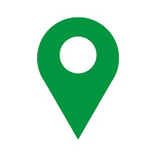
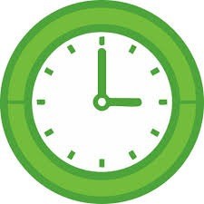

Com tantas cidades, atrações e experiências espalhadas pelo estado, planejar uma viagem pode ser
mais difícil do que parece. Por isso, oferecemos uma consultoria personalizada, na qual analisamos seus
objetivos e indicamos os destinos, atrações e roteiros que melhor se encaixam no seu perfil de viajante.
Por um valor acessível, você recebe orientações exclusivas para planejar sua viagem com mais
praticidade e confiança. Menos tempo pesquisando. Mais tempo aproveitando.
ROTEIRO PERSONALIZADO
Receba recomendações e orientações para descobrir os destinos que mais combinam com o
seu perfil de
viajante.
R$ 29,90
✔️ Consultoria individual
✔️ Recomendações personalizadas
✔️ Planejamento adaptado ao seu orçamento
✔️ Economia de tempo na pesquisa
Roteiros Personalizados
Cada viagem é única. Nossas recomendações são elaboradas de acordo com seus objetivos, interesses e
estilo de viagem.

Conhecimento Regional
Conte com orientações de quem conhece as diferentes regiões de Minas Gerais, suas atrações e
características.

Economia de Tempo
Evite horas de pesquisa e receba direcionamentos claros para planejar sua viagem com mais
praticidade.